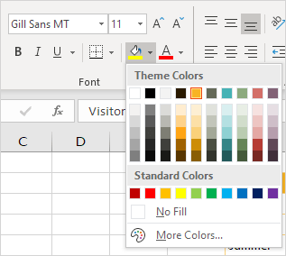

Excel menawarkan tema untuk mengubah tampilan buku kerja Anda dengan mengklik tombol. Setiap tema terdiri dari 12 warna, dua font (Headings dan Body) dan efek untuk bentuk dan SmartArt.
 unduh file Excel dan coba masukkan fungsi-fungsi ini.
unduh file Excel dan coba masukkan fungsi-fungsi ini.
1. Pada tab Page Layout, di grup Themes, Anda dapat melihat bahwa lembar kerja di bawah ini menggunakan tema Office standar.

2. Pada tab Beranda, dalam grup Font, Anda dapat melihat Warna Tema dan Font Tema (Calibri Light dan Calibri) dari tema ini.


3. Pada tab Page Layout, di grup Themes, klik Themes dan pilih tema Badge.
4. Pada tab Beranda, di grup Font, Anda dapat melihat Warna Tema dan Font Tema (Impact dan Gill Sans MT) dari tema ini.
 
Catatan: pada tab Tata Letak Halaman, dalam grup Tema, klik Warna, Kustomisasi Warna untuk membuat warna tema baru atau klik Font, Kustomisasi Font untuk membuat font tema baru. Selanjutnya, klik Tema, Simpan Tema Saat Ini untuk menyimpan tema Anda di folder Tema Dokumen. Anda sekarang dapat menggunakan tema ini di semua buku kerja Anda. Anda bahkan dapat menggunakan tema ini di Word dan PowerPoint!
Jika Anda ingin melihat beberapa buku kerja Excel secara bersamaan, jalankan langkah-langkah berikut.
1. Pertama, buka dua atau lebih buku kerja.
2. Pada tab Lihat, di grup Jendela, klik Atur Semua.

3. Pilih pengaturan susunan yang diinginkan. Misalnya, klik Horisontal.

4. Klik Oke.

5. Pada tab View, dalam grup Window, klik View Side by Side (secara default, Synchronous Scrolling diaktifkan), untuk menggulir kedua buku kerja secara bersamaan.